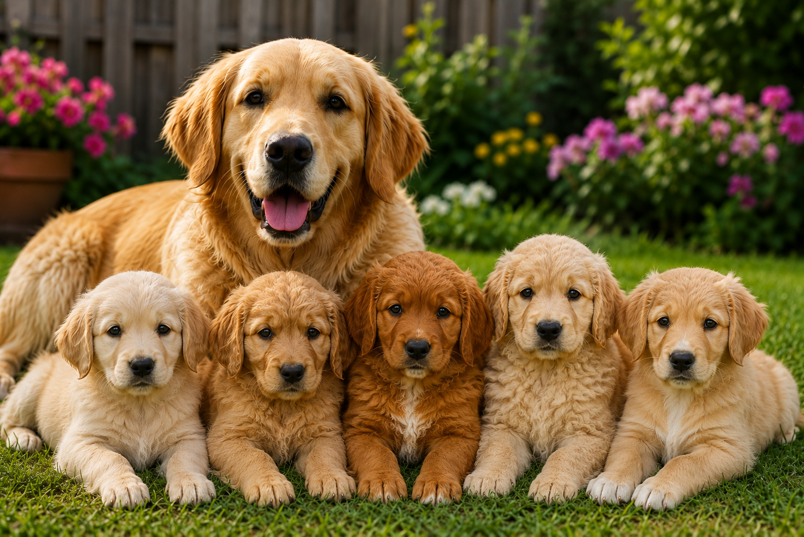
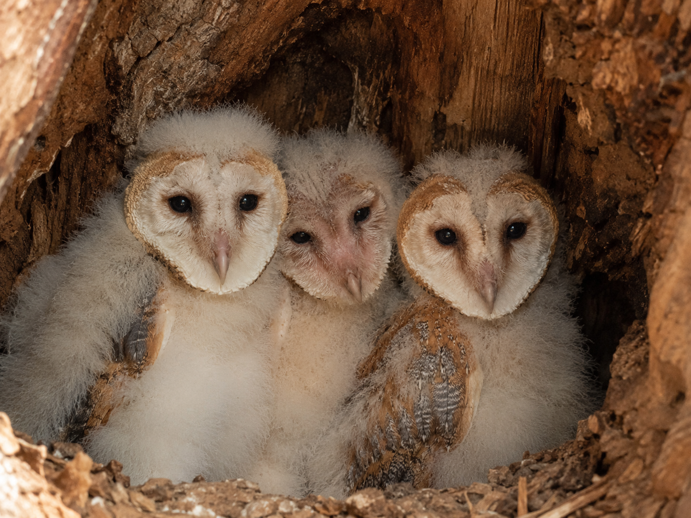

Hold this question as you work through the lesson. By the end, you should be able to answer it with evidence!
Start here. Learn the words you will use today.
Look at the photo below — a golden retriever and her puppies. Take a moment to really study it before you write anything.

Think about it:
What do you notice? List at least three things the puppies and their mother have in common.
What do you wonder? Write one question you have about why they look similar — but not exactly alike.
Before we dive in, let's learn the words scientists use when they study how traits are passed down. Tap each card to flip it and read the definition.
Copy this sentence carefully into your science notebook:
"Offspring inherit traits from their parents, but small variations mean no two offspring are exactly alike."
Now learn the main science idea.
A traittraitA feature or characteristic of a living thing, like fur color or leaf shape. is any feature of a living thing. Fur color, eye color, leaf shape, flower color, and body size are all traits.
Plants and animals get many of their traits from their parents. This is called inheritinginheritTo receive traits from your parents. a trait. Traits pass from one generation to the next.
OffspringoffspringThe young of a plant or animal. usually look similar to their parents — but they are never exactly the same. Look at the photo of the golden retriever family. The puppies are all golden retrievers, and they all have soft fur and floppy ears. But some are darker gold; others are nearly cream.
Those small differences are called variationvariationSmall differences in traits within a group of similar organisms.. Variation shows up in every species — birds of the same type may have slightly different patterns, and flowers from the same plant may open at slightly different sizes.
Examples of variation: coat color in a litter of kittens · height of sunflower plants grown from the same packet of seeds · feather patterns among siblings in a bird nest.

Scientists don't just observe one parent and one offspring. They collect data on many organisms and look for patternspatternSomething that repeats in a predictable way. Scientists use patterns to make predictions.. They ask: which traits are almost always shared? Which ones vary the most?
When a trait shows up in parents and in most of their offspring, that's strong evidence the trait is inherited. Variation within the group tells scientists that inherited traits come with small, natural differences.
Real-World Connection: Researchers who study bald eagles in Yellowstone have recorded wing patterns, beak shape, and feather color across hundreds of birds. The patterns help them identify family groups and track how traits pass through generations.
Offspring inherit traits from their parents, so they look similar. But variation means no two offspring are exactly the same — even in the same litter or seed pod.
Patterns of similarity across many organisms are evidence that traits are inherited. Variation within a group tells us those traits can come in slightly different forms.
Curious? Go Deeper
Where does variation actually come from? When parents have offspring, the traits don't just copy from one parent — they mix. A puppy might inherit fur color closer to one parent and ear shape closer to the other. That mixing is what produces variation.
Scientists who study heredity look at hundreds or even thousands of plants and animals to find the patterns. They count how often certain traits appear. When a trait shows up in most offspring, that's a strong clue it's reliably inherited. When a trait varies a lot, scientists investigate why — sometimes the environment plays a role too. A normally tall plant grown without enough sunlight will be smaller than its siblings. Same inherited potential, different outcome.
Now test the idea yourself.
You'll need: your science notebook, pencil, colored pencils, and the photo below — or any plant or animal family photo you can observe.
Work through each step carefully. Record your observations in your science notebook as you go.
Pick your organism family. Use the golden retriever photo — or choose a plant or animal family you can observe or look up. Write the name at the top of your chart.
Make a trait chart. Draw a simple two-column chart: one side for the parent, one side for one offspring. Label it "Trait Comparison Chart."
Record at least four traits. Choose traits you can actually see — like fur/coat color, ear shape, eye color, or body size. Fill in what you observe for both parent and offspring.
Circle the shared traits. Which traits did the offspring inherit from the parent? Circle or highlight those in your chart.
Look for variation. Now compare two or three offspring to each other. Do all the offspring look identical? Write one sentence describing the variation you notice.
Think about it:
1. Which traits were clearly inherited by the offspring?
2. How were the offspring similar to the parent? How were they different?
3. Did all of the offspring look exactly the same? What does that tell you about variation?
Check what you understand.
Show what you learned.
🔍 Part A — Identify the Traits
Look at the photo of the golden retriever and her puppies. In your science notebook, make a simple two-column chart.
Your chart should have:
Record at least four traits. Circle any traits that show variation across the puppies.
📝 Part B — Short Answer
Answer each question in complete sentences.
1. What is an inherited trait? Give one example from the photo.
2. Why do the puppies look similar to their mother but not exactly the same?
3. How would a scientist use data from many litters to show that fur color is an inherited trait?
How do inherited traits explain why offspring look like their parents — but also show variation?
What did you observe?
💡 Start with: "When I looked at the parent and offspring, I noticed that…"
What does that tell you?
💡 Start with: "This tells me that traits are… because…"
Why does that make sense?
💡 Start with: "This makes sense because…"
📚 Try to use at least one of these words: trait, inherit, variation, offspring
🎨 Part C — Draw & Label
Draw a parent organism and two of its offspring. Label at least three inherited traits. Show how the offspring are similar — and where you see variation. Your diagram should look like the one in the lesson, but for your chosen organism.
Submit your work on Canvas using one of these options:
Make sure your submission includes all of these: